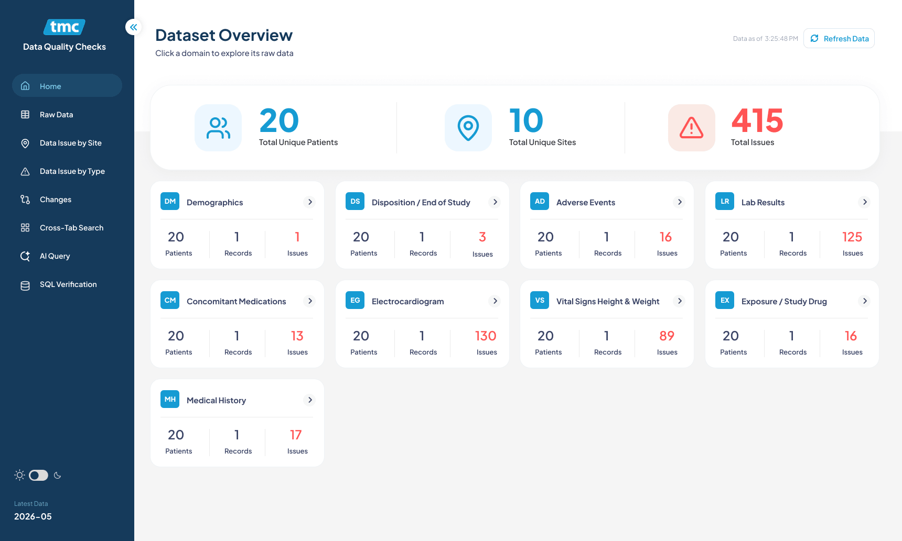

TMC Operations Dashboard
A data intelligence and issue-tracking dashboard for telecom operations — giving teams a unified view of site health, AI-assisted querying, data issues by location, and issue breakdowns by type across regions.
Scattered data, slow decision making
Operations teams were relying on fragmented reports to track site health and identify data issues. Critical patterns were hidden in spreadsheets, and finding answers required jumping between multiple tools.
I designed the TMC Operations Dashboard as a single command centre — combining AI-powered querying, regional site issue breakdowns, and type-based issue analysis to help teams spot and resolve problems faster.

Home Dashboard — KPIs, regional site issue breakdown, AI Query, and issue type analysis

AI Query — natural language interface for operational questions and data-driven answers

Site-level view — expandable region rows with summary metrics and issue distribution

Issue type breakdown — visual categorisation of data quality issues across the network
What I designed
Operations Home
High-level KPIs, regional site health, quick navigation to AI query, and data issue summaries in a single dashboard.
AI Query
Natural language interface for operations teams to ask data questions and receive structured answers.
Issues by Site
Expandable region and site-level rows with issue summaries, counts, and drill-down details for field teams.
Issues by Type
Categorised breakdown of data quality issues with visual charts to identify recurring patterns and prioritise fixes.
Data Tables
Clean, scannable tables with status badges, progress bars, and filters for fast triage and reporting.
Design System
Reusable Figma components for cards, charts, badges, and data tables to maintain consistency across dashboards.
Faster insights, cleaner data
The TMC Operations Dashboard consolidated multiple data sources into one view, reducing the time to identify regional issues. The AI Query feature gave non-technical users direct access to operational answers, while the site and type breakdowns helped prioritise remediation efforts and improve overall data quality.